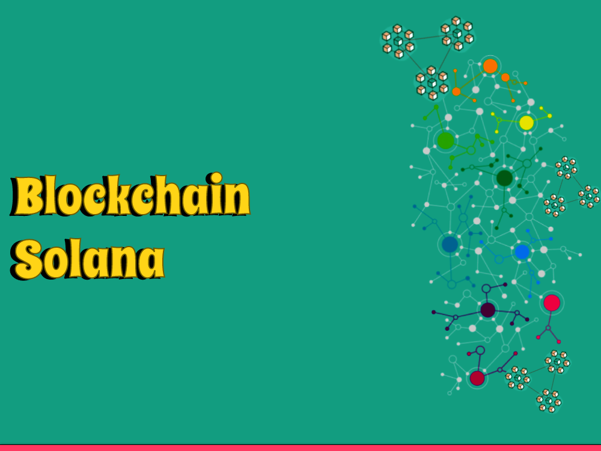
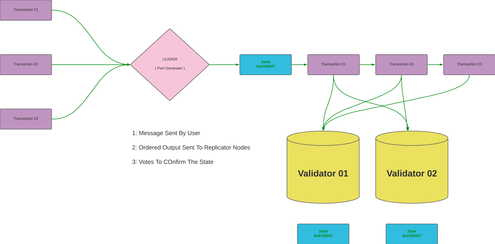

What is Solana, and how does it work?
Solana is a special kind of technology that helps people build and use new types of digital applications. It is like a computer network that keeps track of important information and allows people to do things like buy and sell digital items, play games, and more.
One of the cool things about Solana is that it can handle lots of transactions very quickly. It's like having a super-fast highway where many cars can drive at the same time without getting stuck in traffic. This means that people using Solana can do things quickly and without having to wait for a long time.
Solana also has its own special money called "SOL." People can use SOL to do different things on the Solana network, like paying for transactions or participating in decision-making. It's like having a special currency that you can use only in certain places.
What makes Solana even more interesting is that it can work with other computer networks, like connecting different highways together. This is useful because it allows people to use Solana with other systems and move things between them easily. It's like being able to visit different cities and bring your favorite things with you wherever you go.
Overall, Solana is a technology that helps people build and use new digital applications quickly and efficiently. It's like a fast highway system that allows people to do things easily and connect with other networks. With Solana, the possibilities for creating and using digital applications are exciting and endless.
Beginners Guide To Solana
Here are some best guidelines to consider when working with Solana, a powerful blockchain platform:
1: Educate Yourself
Start by understanding the basics of blockchain technology and how Solana fits into the broader ecosystem. Familiarize yourself with the core concepts, terminology, and underlying principles of decentralized networks.
2: Research and Due Diligence
Before engaging with any project or investment opportunity within the Solana ecosystem, conduct thorough research. Assess the project's credibility, team expertise, roadmap, and community support. Verify the security measures in place and analyze the potential risks and rewards.
3: Secure Your Wallet
Safeguard your Solana wallet and private keys. Choose a reliable wallet provider and follow best practices for securing your digital assets. Consider using hardware wallets or encrypted software wallets with strong password protection and two-factor authentication (2FA).
4: Stay Informed
Stay updated with the latest news, announcements, and developments related to Solana. Follow official Solana channels, subscribe to reputable newsletters, and engage with the community. This will help you stay informed about important updates, upgrades, and potential opportunities.
5: Verify Smart Contracts
When interacting with decentralized applications (DApps) on Solana, double-check the smart contracts' code and functionality. Audit smart contracts for potential vulnerabilities and ensure that they have undergone thorough security assessments.
6: Diversify Your Investments
While Solana may present exciting opportunities, it's crucial to diversify your investments. Allocate your resources across different projects, tokens, or sectors within the blockchain and cryptocurrency space to mitigate risks and maximize potential gains.
7: Exercise Caution with Third-Party Services
Be cautious when using third-party services or decentralized exchanges (DEXs) within the Solana ecosystem. Verify their legitimacy, security practices, and user feedback before providing sensitive information or executing transactions.
8: Participate in Governance
If you hold SOL tokens, consider participating in the governance of the Solana network. Stay informed about proposals, voting events, and community discussions. Active participation can help shape the future direction of the platform.
9: Network Scalability Considerations
While Solana offers high scalability, keep in mind that network congestion or high demand may impact transaction costs or processing times. Plan your activities accordingly and be aware of any potential network limitations during peak periods.
10: Continuous Learning
Embrace a mindset of continuous learning and adaptation. The blockchain space is dynamic and rapidly evolving. Stay curious, explore new projects, technologies, and opportunities within the Solana ecosystem, and adapt your strategies as the industry evolves.
Solana Architecture
Welcome to the astonishing universe of Solana engineering, where state of the art innovation meets adaptability and decentralization. Solana is a cutting edge blockchain stage intended to address the limits of existing blockchain networks and open additional opportunities for designers, business visionaries, and clients the same. In this article, we will dive into the center parts and imaginative highlights that make Solana a distinct advantage in the domain of decentralized applications (dApps) and digital money exchanges.
1: Grasping Solana's Elite Execution Agreement Calculation
At the core of Solana's engineering lies its novel agreement calculation, called Verification of History (PoH). PoH empowers Solana to accomplish exceptional versatility by acquainting an evident timestamp with every exchange. This original methodology guarantees that the request for exchanges is settled upon by the organization members, dispensing with the requirement for conventional agreement systems that frequently become bottlenecks in versatility.
The Force of Solana's Layered Methodology
Solana utilizes a layered design that joins the best components of different innovations to convey unmatched execution. At its base layer, the Verification of History system gives a reliable and changeless timetable of occasions. On top of this, Solana uses a superior exhibition execution of the Verification of Stake (PoS) agreement instrument, which empowers quick block affirmation and energy proficiency.
Solana's Pinnacle BFT Agreement: Quick and Secure
Solana views security in a serious way, and to accomplish agreement among the organization's validators, it carries out a variation of the Useful Byzantine Adaptation to internal failure (PBFT) agreement convention called Pinnacle BFT. This agreement component guarantees that the organization can endure Byzantine flaws while keeping up with high throughput and low idleness. By joining PBFT with PoH, Solana accomplishes a hearty and secure foundation for decentralized applications.
Solana's Exchange Handling and Parallelism
One of Solana's key assets is its capacity to handle a high volume of exchanges in equal, because of its extraordinary design. Solana's exchange handling framework, known as Bay Stream, use the accessible organization data transmission and computational ability to deal with large number of exchanges each second. This remarkable versatility opens up entryways for true applications with mass reception potential.
Engineer Agreeable Biological system
Solana's design reaches out past its specialized perspectives; it likewise cultivates a biological system that welcomes engineers. Solana gives broad designer instruments, libraries, and systems that work on the creation and arrangement of dApps. The Solana Programming Improvement Unit (SDK) and complete documentation enable designers to fabricate inventive blockchain-based arrangements effectively.
Certifiable Applications on Solana
With its high adaptability and low exchange costs, Solana has drawn in various true applications across different businesses. From decentralized finance (DeFi) stages to non-fungible token (NFT) commercial centers, Solana's engineering has demonstrated dealing with requesting workloads potential. The environment keeps on developing, introducing energizing open doors for business people and fans to investigate and expand upon.

How can you start with Blockchain Solana?
Is it true or not that you are anxious to jump into the universe of blockchain and investigate the inventive open doors it offers? Look no farther than Solana, an elite presentation blockchain stage that consolidates speed, versatility, and designer cordial highlights. In this far reaching guide, we will walk you through the moves toward begin with Solana, enabling you to leave on your blockchain venture with certainty.
Figuring out Solana's Center Ideas
Prior to jumping into the specialized perspectives, accepting the center ideas of Solana is fundamental. Solana is a decentralized blockchain network intended to give quick and versatile answers for decentralized applications (dApps) and digital currencies. It accomplishes high throughput by using a special blend of agreement calculations, equal handling, and a layered engineering.
Setting Up Your Improvement Climate
To begin expanding on Solana, you'll have to set up your advancement climate. Start by introducing the Solana Order Line Connection point (CLI) apparatus, which permits you to communicate with the Solana organization, convey savvy contracts, and deal with your record. The Solana CLI gives a clear and strong connection point for engineers.
Making a Solana Wallet
Then, you'll require a Solana wallet to store and deal with your computerized resources. Solana upholds different wallet choices, including the Solana Order Line Wallet (CLI), program expansions like Sollet, or equipment wallets viable with Solana. Pick a wallet that suits your inclinations concerning security, openness, and convenience.
Acquiring SOL Tokens
SOL is the local digital currency of the Solana organization and is expected for different tasks, for example, paying for exchange charges and associating with decentralized applications. You can get SOL tokens from digital money trades that help Solana or partake in symbolic deals and airdrops. Guarantee that you follow best practices for safely putting away your SOL tokens.
Investigating Solana Documentation and Designer Assets
Solana gives broad documentation and assets to direct designers at each step. Investigate the authority Solana documentation, which offers top to bottom clarifications, instructional exercises, and code models. Also, join the Solana engineer local area, partake in discussions, and draw in with individual designers to gain from their encounters and gain important experiences.
Fabricating and Sending Your Most memorable Solana dApp
Since you have your advancement climate set up and found out about Solana's ideas, now is the right time to begin fabricating your most memorable decentralized application on Solana. Solana upholds different programming dialects, like Rust, C, and C++, with broad libraries and systems accessible. Influence the Solana SDK to foster shrewd agreements, cooperate with the Solana organization, and make drawing in client encounters.
Testing and Repeating
As you foster your Solana dApp, it's pivotal to thoroughly test and repeat to guarantee its security and usefulness. Solana offers a testnet climate where you can convey and test your savvy contracts and dApps without causing any expenses. Completely test your code, recreate various situations, and accumulate criticism from clients and the engineer local area to improve and refine your application.
Joining the Solana Biological system
Whenever you have constructed and tried your Solana dApp, it's opportunity to feature your creation to the world and join the dynamic Solana biological system. Consider partaking in hackathons, engineer difficulties, or award programs presented by the Solana Establishment to acquire perceivability and possibly secure subsidizing for your venture. Draw in with the Solana people group, share your experiences, and team up with similar people to additional improve your dApp's true capacity.
Conclusion
As we conclude our exploration of the Blockchain Solana, we recognize the immense potential and versatility that distributed ledger technology offers. Public, private, consortium, and hybrid blockchains each serve specific purposes, catering to the diverse needs of industries and organizations worldwide.
By understanding the characteristics and applications of these different types, we can harness the power of blockchain to drive innovation, transparency, and efficiency across various sectors.